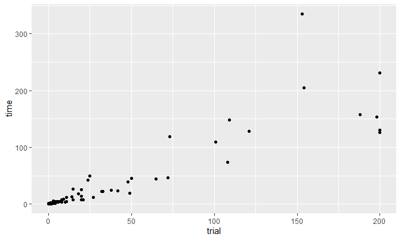
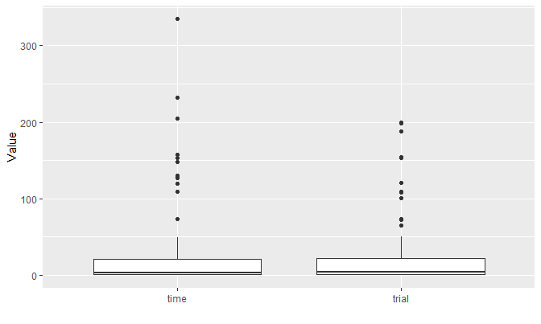
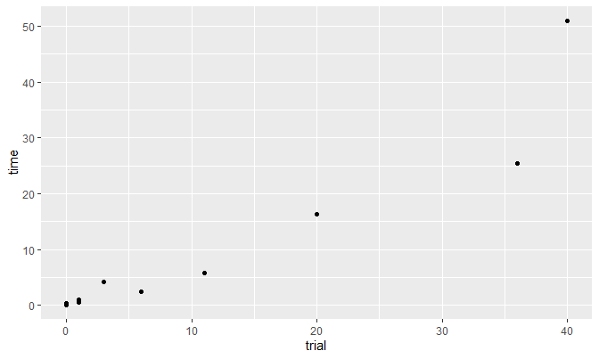

The following packages are used:
sudsoln package is used to solve 95 hard questions and 11 hardest questions posted on Dr. Peter Norvig’s website.
1. Summary
The following script has run on the command line, and the results have been saved as a .csv file.
Questions:
- How many of them are solved?
- How many of them are solved logically?
- How long did it take to solve them?
top95_result <- read_csv(
'../../../files/result_top95.csv',
col_types = 'ccil'
)
glimpse(top95_result)## Observations: 95
## Variables: 4
## $ result <chr> "'4173698256321589479587243168254371697915864323469...
## $ time <chr> "0:00:00.331116", "0:00:00.352059", "0:00:00.270314...
## $ trial <int> 0, 0, 0, 8, 11, 0, 2, 1, 3, 1, 1, 101, 25, 15, 108,...
## $ has_solved <lgl> TRUE, TRUE, TRUE, TRUE, TRUE, TRUE, TRUE, TRUE, TRU...count_milli <- function(x) {
hours <- as.numeric(substr(x, 1, 1))
minutes <- as.numeric(substr(x, 3, 4))
seconds <- as.numeric(substring(x, 6))
hours * 3600 + minutes * 60 + seconds
}(
top95_result <- top95_result %>%
mutate(
result = gsub("'", "", result),
time = count_milli(time)
)
)## # A tibble: 95 x 4
## result time trial has_solved
## <chr> <dbl> <int> <lgl>
## 1 41736982563215894795872431682543716979158643234~ 0.331 0 TRUE
## 2 52731648989654273131498756217245389668927135445~ 0.352 0 TRUE
## 3 61745982324873691553912846798256437137429158615~ 0.270 0 TRUE
## 4 48731269559368427112659738473584916291426583726~ 6.46 8 TRUE
## 5 96231485713458726957829641384796253165187394232~ 12.1 11 TRUE
## 6 41683752998246537173512946857129864329374618586~ 0.252 0 TRUE
## 7 68215437995176384237489216543752891681693725429~ 1.69 2 TRUE
## 8 65248193783467915297132586446781259331579462829~ 1.39 1 TRUE
## 9 68215347995176483237489216543752891681694725329~ 5.29 3 TRUE
## 10 79235164854378612968142953715764829392413786583~ 0.559 1 TRUE
## # ... with 85 more rows## result time trial has_solved
## Length:95 Min. : 0.2264 Min. : 0.00 Mode :logical
## Class :character 1st Qu.: 0.6557 1st Qu.: 1.00 FALSE:3
## Mode :character Median : 3.2174 Median : 4.00 TRUE :92
## Mean : 26.9373 Mean : 27.63
## 3rd Qu.: 20.5532 3rd Qu.: 22.50
## Max. :335.2807 Max. :200.00
top95_result %>%
select(time, trial) %>%
gather(key, value) %>%
ggplot(aes(x = key, y = value)) +
geom_boxplot() +
labs(x = '', y = 'Value')
## # A tibble: 15 x 4
## result time trial has_solved
## <chr> <dbl> <int> <lgl>
## 1 417369825632158947958724316825437169791586432346~ 0.331 0 TRUE
## 2 527316489896542731314987562172453896689271354453~ 0.352 0 TRUE
## 3 617459823248736915539128467982564371374291586156~ 0.270 0 TRUE
## 4 416837529982465371735129468571298643293746185864~ 0.252 0 TRUE
## 5 498716523257839461136425987971382654684157392523~ 0.290 0 TRUE
## 6 417369825638125947952748316825437169791856432346~ 0.538 0 TRUE
## 7 254379861761248593893516742326791458915824376487~ 0.391 0 TRUE
## 8 781942365324576918659831724815723496936154872247~ 0.400 0 TRUE
## 9 417369528839125746652748319925837461741956832386~ 0.251 0 TRUE
## 10 723469851651238794894715632375691428912874365486~ 0.575 0 TRUE
## 11 124597863937648215856231749513786492482913657769~ 0.264 0 TRUE
## 12 265389471874251693193647852327894165946125387518~ 0.498 0 TRUE
## 13 724369851651248793893715642375691428912874365486~ 1.000 0 TRUE
## 14 253479861761238594894516732326791458915824376487~ 0.411 0 TRUE
## 15 618459723342867519579123468296534187784291635153~ 0.317 0 TRUEhardest_result <- read_csv(
'../../../files/result_hardest.csv',
col_types = 'ccil'
) %>%
mutate(
result = gsub("'", "", result),
time = count_milli(time)
)
hardest_result %>% summary()## result time trial has_solved
## Length:11 Min. : 0.07556 Min. : 0.00 Mode:logical
## Class :character 1st Qu.: 0.44307 1st Qu.: 0.50 TRUE:11
## Mode :character Median : 2.41935 Median : 3.00
## Mean : 9.78858 Mean :10.73
## 3rd Qu.:11.09310 3rd Qu.:15.50
## Max. :51.01026 Max. :40.00
top95_result %>%
mutate(trial_group = ifelse(trial == 0, 'logical', 'forceful')) %>%
group_by(trial_group) %>%
summarize(meantime = mean(time))## # A tibble: 2 x 2
## trial_group meantime
## <chr> <dbl>
## 1 forceful 31.9
## 2 logical 0.409